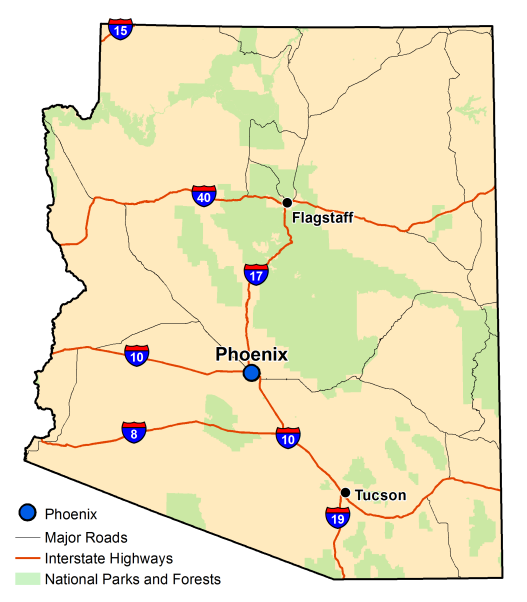

HRS History
HRS started as a remodeling effort by Emily and her husband Joe back in May 2007.
They had contracted to do work for some family and friends that wanted to upgrade their existing homes (bathrooms and kitchens are their specialty). This included providing design work, and upgrades to kitchens and baths. Emily and Joe quickly determined that there was a tremendous need for this service in the greater Phoenix/Scottsdale, AZ area. They applied for a business license and opened Home Renovation Systems as an LLC out of a small store location they rented at 101 Sedalia Drive, Phoenix, AZ 85001.
The first store location included some sample cabinets and appliances that they would later become regional distributors for. Both Joe and Emily became General Contractors in 2007 and all of their bath and kitchen design specialists that have been hired since have acquired kitchen and bath design certifications. They became so busy with their construction, design and consultation services and trying to run a successful small business that they hired a design/sales professional to take over much of their design work.
In 2009 they opened a second location at 901 S. Sedona Way, Scottsdale, AZ. This was a much smaller location and included only 4 employees (2 sales and design associates and 2 installation/renovation and delivery associates). In 2012 they opened their third location in Tucson, AZ. This store was in a strip mall at 8023 Sedalia Dr., Phoenix, AZ.
Their latest endeavor, June 2016 was the purchase of 2 existing stores that are out of state. One of the stores specializes in high-end appliances and bathrooms located in Las Vegas, NV – Elite Home Renovations; and the other site is a typical home supply store located in Albuquerque, NM– IRB Home Supply